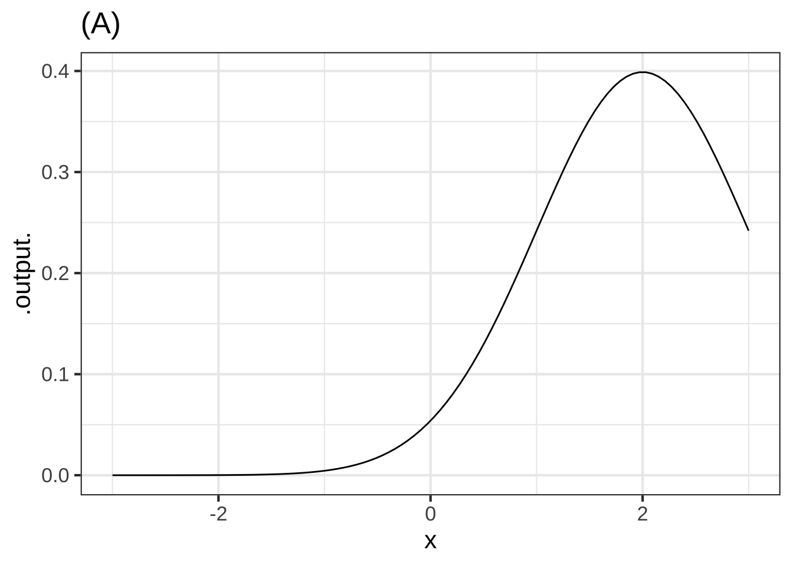

9 Slope function
For our purposes, the definition of calculus is  1100
1100
The use of functions to model and explore continuous change
The agenda of this chapter is to give specific mathematical meaning to the word “change.”
9.1 Change and slope
You have an solid, intuitive sense of what “change” means. In mathematics, and especially the mathematics of functions, change has a very simple meaning that you have already touched on in your previous math education.
The word that encapsulates “change” in high-school math is slope. For instance, you’ve undoubtedly had to calculate the slope of a straight line in a graph. You learned about “rise” and “run” and how to read them from a graph or from a formula. The slope is the ratio: rise over run.
Slope is a lovely metaphor for change, since everyone has a intuitive sense of the slope of a road or of a hillside. You learned to apply this intuition to reading graphs and the slope of a line. We’ll exploit the intuitive ability to read a landscape in order to introduce abstract mathematical ideas in a down-to-earth setting. It’s a very effective pedagogical strategy.
But not everything that changes has a “slope.” For instance, the population of a country can change, as can the number of new cases of an epidemic disease, the temperature of a cup of coffee, or the distance from Earth of a spacecraft. A major part of learning calculus is generalizing and abstracting the mathematical concept of which “slope” is an example and becoming proficient with mathematical procedures for working with change.
9.2 Continuous change
Most people are comfortable with the ideas of daily changes in temperature or monthly changes in credit-card debt or quarterly changes in the unemployment rate or annual changes in the height of a child. Such things are easy to record in, say, a spreadsheet. For example, as I write, the weather forecast for the next several days (in southeastern Colorado in mid-May) is 1110
| Day | High | Low | Description |
|---|---|---|---|
| Thursday | 73 | 43 | sunny |
| Friday | 72 | 48 | windy |
| Saturday | 66 | 48 | thunderstorms |
| Sunday | 68 | 43 | windy |
| Monday | 70 | 39 | sunny |
| Tuesday | 70 | 43 | sunny |
| Wednesday | 66 | 45 | partly cloudy |
Such data is said to be discrete. The day is listed, but not the time of day. The high temperature is forecast, but not the time of that high. The “description” is also discrete, one of the several words that are used to summarize the quality of the weather, as opposed to the quantity of rain.
Calculus is about continuous change. For instance, if the weather bureau provide a web interface that let me enter the date and time to the nearest fraction of a second, they would be giving a way to track the change continuously. Many physical processes are intrinsically continuous, for instance the motion (change in position) of a spacecraft or the height of the tide or the stress on a tree as a function of wind velocity.
Finding a language to describe continuous change—famously, the position of the moon or planets in their orbit, or the speed of a ball rolling down a ramp—was central to the emergence of what historians call the “Age of Enlightenment” or “modern scientific method.” The first complete presentation of that language was published by Isaac Newton based on his work in the 1660s. As you might guess, the name of the language is “calculus.”
9.3 Slope
You already know pretty much everything there is to know about the straight-line function,
Formula: \(f(x) \equiv a x + b\). The parameters \(a\) and \(b\) are the “slope” and “intercept” respectively. (More precisely, \(b\) is the “y-intercept.” But in statistics and modeling, it’s just the “intercept.”)
-
Reading parameters from a graph: You learned several ways to do this which are all equivalent. Maybe the easiest is the read the y-intercept off the graph. That’s \(b\). Then choose some non-zero \(x_1\) and read off from the graph the value of \(f(x_1)\). The slope is simply \[\frac{f(x_1) - b}{x_0}\]
The y-intercept method is a special case of a more general method, the two-point method, that you can use even if the y-intercept isn’t shown on the graph. Pick two specific values of \(x\), which we’ll call \(x_0\) and \(x_1\). Evalate the function at these input values and compute the rise over run: \[\mbox{rise over run} \equiv \frac{f(x_1) - f(x_0)}{x_1 - x_0}\] The rise over run is the slope of the straight line.
The y-intercept method is exactly the same as the two-point method with \(x_0 = 0\).
Matching a straight-line function to data: You might not have been taught this formally, but the basic process is easy to imitate. The process is called line fitting or, in statistics and other fields, linear regression.
1120
9.4 The fitted line
To illustrate line fitting, let’s return to the cooling mug of water. Figure 9.1 shows the data along with a dozen candidate straight line functions, each one drawn in its own color.
Figure 9.1: Some candidate straight-line function models plotted on top of the cooling water data. Which one(s) would you pick as good matches to the data?
Some of the straight-line models are a much better match to the data than others. The blue-shaded functions are pretty good fits, at least when you consider the limitations of matching data with a curved pattern by a straight line. The green-colored functions are maybe OK but not as good as the blue, and the purple-shaded functions are just horrible.
Now that you know what a reasonable straight-line model looks like, you will find it pretty easy to draw one on data graphics that even remotely show a straight-line pattern.
Step 1: Draw a reasonable straight-line through the data points.
Step 2: Find the parameters that correspond to the line you drew.
9.5 Average rate of change
Since the slope is our standard way of representing a relationship of change, we will often use it as a way of summarizing a function. To illustrate, consider the exponential model we constructed to match the cooling-water data: 1130
water <- makeFun(60.7*exp(-0.019*t) + 25.93 ~ t)Figure 9.2: The exponential function that was previously matched to the cooling-water data. The slope of the straight line connecting two points on the function graph is the average rate of change during the interval.
During the interval \([t_0, t_1]\) the rate at which the water cools is higher at first and lower at the end. The average rate of change is a single number that summarizes the whole interval.
For all except straight-line models, the average rate of change depends on the interval chosen.
Exercise 9.3: KEWIX
We will be working extensively with the change in output value of a function when the input value changes.
The change in the output value of a function \(f()\) when the input changes from \(x = a\) to \(x = b\) is \[f(x=b) - f(x=a)\] Notice that when we talk about the change from \(x=a\) to \(x=b\) we subtract \(f(x=a)\) from \(f(x=b)\). That change is sometimes called the rise in the value of the function. Rise always compares (by subtraction) the two output values corresponding to two specific input values. Remember that \(a\) and \(b\) stand for specific numbers.
Corresponding with the idea of the change in output being \(f(x=b) - f(x=a)\) the change in the input value to a function is \(b - a\). This is often called the run in the value of the input.
Each point on the graph of a function has Cartesian coordinates \((a, f(x=a))\). For example, the graph of the function \(f()\) shown in Graph I includes points such as \((1.0, 4.0)\), and \((3.5, 3.0)\). The second coordinate is the output value when we provide the first coordinate as an input value. The nature of the \(f()\) function (as defined by the graph) is such that \(f(x=1) \equiv 4\) and \(f(x=3.5) \equiv 3\).
Question A True or false: In Graph I, the rise from a to b is positive.
TRUE ︎✘ \(f(x=a) > f(x=b)\), so the rise \(f(x=b) - f(x=a)\) is negative. FALSE Right-oh!
Question B True or false: In Graph I, the run from \(x=a\) to \(x=b\) is positive.
TRUE Right! FALSE ︎✘ The run is about the relative positions of \(x=a\) and \(x=b\) on the x-axis. Since \(a < b\), the run from \(x=a\) to \(x=b\) is positive.

Question C True or false: In Graph II, the run from a to b is positive.
TRUE Right-oh! FALSE ︎✘ The run is about the relative positions of a and b on the x-axis. Since a is to the left of b, the run from a to b is positive.
Question D True or false: In Graph II, the rise from a to b is positive.
TRUE ︎✘ Remember, the rise from \(x=a\) to \(x=b\) is \(f(x=b) - f(x=a)\) FALSE Good.
Question E True or false: In Graph II, the run from b to c is positive.
TRUE ︎✘ The run from \(x=b\) to \(x=c\) is \(c - b\). Since \(b>c\) b to c is negative. FALSE Good.
Question F True or false: In Graph II, the rise from b to c is positive.
TRUE Right-oh! FALSE ︎✘ The rise from \(x=b\) to \(x=c\) is \(f(x = c) - f(x = b)\). Since \(f(x=c) > f(x=b)\), the rise is positive.
Question G For an interval [2, 6] what is the value of the run? (The answer is independent of any particular graph/function.)
4 Correct. The run is always the second number in the interval minus the first number. That’s \(6 - 2\) here. -4 ︎✘ You got it backwards! The second number in the interval, 6, is numerically to the right of 2, so the run is positive.
Question H Which is the run of the interval [6, 2]? (Again, the answer is independent of any particular graph/function.)
4 ︎✘ Sorry. The run from \(x=6\) to \(x=2\) is \(2 - 6\) which is \(-4\). -4 Correct. The run is \(2 - 6\), the second number in the interval minus the first number.
Exercise 9.7: WRWIX
From the graph in Figure 9.2, compute the average rate of change over the interval \(10 \leq t \leq 200\). How does it compare to the average rate of change over the interval \(10 \leq t \leq 125\)?
Exercise 9.11: YQCLE
Open an R sandbox. You can use these function definitions to help you in your calculations.
Using R, compute the average rate of change of the function over the given interval. Choose the closest answer for each problem.
Question A \(f(x) \equiv 2 e^{x+1}\) over [-2, 2]
-2.99 ︎✘ 1.54 ︎✘ 2.72 ︎✘ 4.68 ︎✘ 9.85 Good. 11.32 ︎✘
Question B \(g(x) \equiv 3 e^{-x}\) over [-1, 1.5]
-2.99 Correct. 1.54 ︎✘ 2.72 ︎✘ 4.68 ︎✘ 9.85 ︎✘ 11.32 ︎✘
Question C \(h(x) \equiv x e^x\) over [0, 1]
-3 ︎✘ 1.54 ︎✘ 2.72 Right! 4.68 ︎✘ 9.85 ︎✘ 11.32 ︎✘
It’s much less work if we use the R function c() to define the interval, and the R function diff() to calculate differences. The next sandbox contains an example asking you to compute the average rate of change of \(f(x) \equiv e^x\) over the interval [0, 4]. You only need lines 1, 3, and 5. The other lines show intermediate results to help you understand what diff() is doing.
Question D True or false: The average rate of change of \(f(x) \equiv e^{x^2}\) over [0.0, 0.1] is 0.1005017
TRUE Right! FALSE ︎✘
Question E True or false: The average rate of change of \(f(x) \equiv \log(x)\) over [2, 3] is 0.5062353.
(Hint: Change the code above so the interval variable goes from 2 to 3 and f becomes the function \(f(x) \equiv \log(x)\))
TRUE ︎✘ FALSE Right-oh!
Question F True or false: The average rate of change of \(f(x) \equiv \sin(x)\) over [0.0, 0.5] is 0.9588511
TRUE Right! FALSE ︎✘
Exercise 9.15: rTSX3
Consider the sinusoid function, graphed below.
Question A What is the average rate of change over the interval \(0 < x < \frac{1}{2}\)? (Choose the closest value.)
0 ︎✘ For this to be true, the function output would need to be the same at the two endpoints of the interval. 0.5 ︎✘ Did you forget to divide the rise by the run? 1 Right-oh! Right. From the interval you have that the run is 1/2. The rise over that interval is from 0 to 1/2, so a rise of 1/2.
Question B What is the average rate of change over the interval \(0 < x < 6.25\)? (Choose the closest value.)
-0.5 ︎✘ 0 Good. Right. The function output is zero at both endpoints of the interval, so the rise is zero. Hence, the run is zero. 0.5 ︎✘
Question C What is the average rate of change over the interval \(0 < x < 10\)? (Choose the closest value.)
-0.05 Right-oh! Right. The rise is -0.5 and the run is 10. -0.5 ︎✘ This is the “rise” over the interval, but it’s not the average rate of change. You’ll need to divide the rise by another quantity to get the average rate of change. 0 ︎✘ 0.5 ︎✘ The rise will be \(f(10) - f(0) pprox -0.5 - 0 = -0.5\). You’ve got the sign wrong.
Exercise 9.19: URIMX
For each of the following, compute the average rate of change of the function over the given interval.
Question A The average rate of change of \(f(x) \equiv x + 5\) over [3, 5] is
-2 ︎✘ Remember, the difference from \(x=3\) to 5 is \(f(5) - f(3)\), not the other way around. And the average rate of change is the difference divided by the length of the interval. -1 ︎✘ Remember, the difference from \(x=3\) to 5 is \(f(5) - f(3)\), not the other way around. Similarly, the length of the interval from \(x=3\) to 5 is \(5-3\), not \(3-5\). 1 Right! \(f(x=5) = 10\) and \(f(x=3) = 8\), so the difference in values is 2. Since this difference occurs over an interval of length 2 (that is, from #x=3$ to 5), the average rate of change is 2/2. 2 ︎✘ Are you sure you took the rate of change rather than simply the change?
Question B The average rate of change of \(f(x) \equiv 3 - 2 x\) over [-4, -2] is
-4 ︎✘ This is the total difference over the interval, not the rate of change. -2 Good. The difference from \(x=-4\) to \(-2\) is \(f(-2) - f(-4) = (7) - (11) = -4\). The length of the interval is \((-2) - (-4) = 2\). So the rate is -4/2, just as you got. 0 ︎✘ 1 ︎✘ When \(x\) changes by two units, \(f(x)\) changes by 4. The rate of change is 4/2 = -2. 2 ︎✘ Check your +/- signs. 4 ︎✘ This is the negative total difference over the interval, not the rate of change. Also check your +/- signs.
Question C The average rate of change of \(f(x) \equiv -3 x^2\) over [0, 4] is
-24 ︎✘ Perhaps you are looking at the derivative at \(x=4\) and not the average rate of change from \(x=0\) to 4. -12 Right! The difference in \(f()\) over the interval is \(f(4) - f(2) = (-48) - 0 = -48\). The length of the interval is \(4-0\), so the average rate of change over the interval is \((-48)/4 = -12\). 0 ︎✘ Perhaps you are looking at the derivative at \(x=0\) and not the average rate of change from \(x=0\) to 4. 1 ︎✘ 2 ︎✘ 12 ︎✘ Check the signs in your arithmetic. 24 ︎✘
Question D The average rate of change of \(f(x) \equiv x^3 - 2 x + 1\) over [0, 2] is
-2 ︎✘ Either check your +/- signs or perhaps you are looking at the derivative at \(x=0\) and not the average rate of change from \(x=0\) to 2. 1.5 ︎✘ 2 Excellent! The difference in \(f()\) over the interval is \(f(2) - f(0) = 5 - 1 = 4\). The length of the interval is \(2 - 0\) so the average rate of change is \(4/2 = 2\). 7 ︎✘ 10 ︎✘ I think you are looking at the derivative at \(x=2\) rather than the average rate of change from 0 to 2.
Exercise 9.2: RDWKW
Some years ago, you learned to calculate the slope of a straight-line function. If you had a graph, you would mark out a run and the corresponding rise, then compute rise/run. If you had a formula definition, e.g. \(f(x) \equiv 3 - 4 x\), you would simply read the slope off as the coefficient on the function input. Here, the input is named \(x\) and its coefficient in the formula is \(-4\).
In this question, we ask you to estimate the slope from a graph of the function. But the function is exponential, so not a straight line.
A fundamental idea in calculus is that even a function with a curved graph, if you zoom in closely around a given point, will look like a straight line. And you know how to calculate the slope of a straight line.
When the graph is curved, the slope will be different at different points along the graph. So there’s not a single slope for the function. Still, we can talk about the “slope at a point.”
One way to specify a point on a function’s graph is to give the horizontal coordinate: the input to the function. But here we’re going to give you the output of the function.
Estimate the slope of the exponential function \(g(x) \equiv e^x\) at several inputs, which we’ll call \(x_1\), \(x_2\), \(x_3\) and \(x_4\). We won’t give you numerical values for the \(x_i\) points, but we will tell you the output of the function at each of those inputs. the values of \(x\) where:
- \(g(x_1) = 1\)
- \(g(x_2) = 5\)
- \(g(x_3) = 10\)
- \(g(x_4) = 0.1\)
The code sandbox below already contains an R command to plot out the mathematical exponential function over the domain \(-3 \leq x \leq 3\). For each of (a)-(d), modify the command to zoom in on the domain around around the appropriate value of \(x_i\). Then calculate the slope of the curve at that \(x_i\).
Question A Using your answers for the slope at the points given in (a)-(d), choose the best answer to this question: What is the pattern in the slope as \(x\) varies?
- The slope at each value \(x_i\) is the same as \(e^{x_i}\). Excellent! This property of the exponential function becomes important when describing a wide range of phenomena, from nuclear isotope decay to population growth.
- The slope at each value \(x_i\) is the same as \(x_i\). ︎✘ That would being saying the slope at \(x_3\) is \(\approx 2.30\). Is that what you got?
- The slope at each value of \(x_i\) is the same as \(x_i^2\). ︎✘ That would being saying the slope at the \(x_3\) is \(\approx 5.30\). Is that what you got?
- The slope at each value of \(x\) is the same as \(\sqrt{x}.\) ︎✘ That would being saying the slope at the \(x_i\) is \(\approx 1.52\). Is that what you got?
Now that you’ve found the answer and seen how to specify the domain on a slice plot, here’s a technique that can make your work a bit easier. Add this to the command that plots \(e^x\) on the domain \(-3 \leq x \leq 3\)
%>% plotly::ggplotly()%>% is on the same line as the slice_plot() expression itself. Run the amended command then hover the cursor over the graph.
“Slope” is a natural metaphor when thinking of a function as a graph. But a more general way to describe the concept is the rate of change of the output with respect to the input. The change in the output from one end of the interval is \(f(x_1) - f(x_0)\), the change in the input is \(x_1 - x_0\). If the input is time (in hours), and the output is the position of a car (in miles), then the rate of change is miles-per-hour: the car’s velocity.
For a straight-line function—think of a car driving at constant speed on a highway—it doesn’t matter what you choose for \(x_1\) and \(x_0\) (so long as they are not identical). But for other functions, the choice does matter.
Imagine a graph of the position of a car along a road as in Figure @ref{fig:stop-and-go}. Over the course of an hour, the car travelled about 25 miles. In other words, the average speed is 25 miles/hour: the slope of the red line segment. Given the traffic, sometimes the car was stopped (time C), sometimes crawling (time D) and sometimes much faster than average (time B).
During the interval from B to C, the car was travelling relatively fast. The slope of the brown segment connecting the position at times B and C is the average rate of change between times B and C. It’s easy to see that the average rate of change from B to C is larger than the overall average from \(t=0\) to \(t=1\). Calculating that slope is a matter of evaluating the position at the endpoints and dividing by the length of the interval. 1140
What is the average rate of change in the car’s position during the interval \(t_B = 0.40\) to \(t_C=0.54\)?
The length of the interval is \(t_C - t_B = 0.54-0.40=0.14\).
Evaluating the function gives \(x(t_C) = 18\) and \(x(t_B) = 12.6\).
Rise is \(x(t_C) - x(t_B) = 18 - 12.6 = 5.4\).
Run is \(t_C - t_B = 0.54-0.40=0.14\).
The average rate of change during the interval is $5.4/0.14 = 38.6 $ miles/hour.
Figure 9.3 shows a simplified model of the amount of usable wood that can be harvested from a typical tree in a managed forest of Ponderosa Pine. (You can see some actual forestry research models here.) 1145

Figure 9.3: A model, somewhat realistic, of the amount of wood that can be harvested from a Ponderosa Pine as a function of years since planting to harvest.
You are writing a business plan for a proposed pine forest. Among other things, you have to forecast the revenue that will be generated and when you will have salable product.
They say that “time is money.” Every year you wait before harvest is another year that you don’t have the money. On the other hand, every year that you wait means more wood at the end. How to decide when to harvest?
The tree continues to grow until year 50, when it seems to have reached an equilibrium: perhaps growth goes to zero, or rot balances what growth there is. There’s no point waiting until after year 50.
At year 25, the tree is growing as fast as it ever will. You’ll get about 600 board-feet of lumber. Should you harvest at year 25? No! That the tree is growing so fast means that you will have a lot more wood at year 26, 27, and so on. The time to harvest is when the growth is getting smaller, so that it’s not worth waiting an extra year.
The quantity of interest is the average rate of growth from seedling to harvest. Harvesting at year 25 will give a total change of 600 board feet over 25 years, giving an average rate of change of \(600 \div 25 = 24 \mbox{board-feet-per-year}\). But if you wait until year 35, you’ll have about 900 board feet, giving an average rate of change of \(900 \div 35 = 25.7 \mbox{board-feet-per-year}\).
It’s easy to construct a diagram that shows whether year 35 is best for the harvest. Recall that our fundamental model of change is the straight-line function. So we’re going to model the model of tree growth as a straight line function. Like the more realistic model, our straight-line model will start out with zero wood at the time of planting. And to be faithful to the realistic model, we’ll insist that the straight-line intersect or touch the realistic model at some point in the future.
Figure 9.4 reiterates the realistic model of the tree but adds on to it several straight-line models that all give zero harvestable wood at planting time. Each of the green lines captures a scenario where the tree is harvested at the indicated time: \(t_1\), \(t_2\), and so on. For the perspective of representing the rate of growth per year from planting to harvest, the straight-line green models do not need to replicate the actual growth curve. The complexities of the curve are not relevant to the growth rate, which can be simplified down to a straight-line model connecting the output at planting time to the output at harvest time. In contrast, the red curves are not suitable models because they don’t match the situation at any harvest time; they don’t touch the curve anywhere after planting!
## Warning: geom_abline(): Ignoring `mapping` because `slope` and/or `intercept`
## were provided.Figure 9.4: Modeling the tree-growth model with straight lines connecting planting time to various harvest times. The slope of each line is the average rate of growth for that planting time.
To maximize average lumber volume per year, choose a harvest time that produces the steepest possible green segment. From Figure 9.4 you can see that it’s possible to do a little better by harvesting before year 35 (shown as \(t_3\) in the diagram).
It’s often best to create a function that shows explicitly what one is trying to optimize. Here that’s ave_growth(year) \(\equiv\) volume(year)/year and is plotted in Figure ??.
Exercise 9.23: HRTIX
For each exercise, you are given a series of intervals that get smaller and smaller. Your job is to calculate the average rate of change of the function \(f(x) \equiv x^2\) for each of the intervals. As the width of the intervals approach zero, our average rates of change become better approximations of the instantaneous rates of change. You should use the results you calculate to make an informed estimate of the instantaneous rate of change.
interval <- c(__start__ , __end__ )
f <- makeFun(x^2 ~ x)
diff(f(interval)) / diff(interval)A. Use these three intervals to estimate the instantaneous rate of change \(\partial_x f(x=3)\) - [3, 3.1] - [3, 3.01] - [3, 3.001]
B. Use these three intervals to estimate the instantaneous rate of change \(\partial_x f(x=5)\) - [4.9, 5] - [4.99, 5] - [4.999, 5]
C. Use these three intervals to estimate the instantaneous rate of change \(\partial_x f(x=-2)\) - [-2, -1.9] - [-2, -1.99] - [-2, -1.999]
9.6 Instantaneous rate of change
The average rate of change is the slope of a line segment connecting two points on the graph of a function, the points \(\left(\strut t_0, f(t_0)\right)\) and \(\left(\strut t_1, f(t_1)\right)\). It reflects all the point-to-point changes in the value of the function over the interval \(t_0\) to \(t_1\) in the function’s domain.
It turns out to be helpful to consider the rate of change of a function at an individual point \(t_0\) in the domain, rather than the interval between two points. This rate of change at a point is called the instantaneous rate of change.
In Block 2, we’ll see that a good way to define an instantaneous rate of change at \(t_0\) is as the average rate of change over the interval \(t_0 \leq t \leq t_0 + h\) with the proviso that the interval length \(h\) goes as closely as it can to zero. Visually, this is the line that’s tangent to the function’s graph at the input value \(t_0\) as in Figure 9.5. 1150
Figure 9.5: A line tangent to a the curve at a single point. The slope of this line is the instantaneous rate of change.
It’s convenient to be able to find the slope of such a tangent line using just the definition \(f(t)\), rather than having to draw a graph and eyeball the tangent. For now, let’s approximate the slope of tangent line by the average rate of change over a small run from \(t_0\) to \(t_0 + 0.1\): \[\text{slope of}\ f(t) \ \text{at}\ t_0 \approx\frac{f(t_0 + 0.1) - f(t_0)}{0.1} = \frac{\text{amount of rise}}{\text{length of run}}\] The \(\approx\) symbol means “is approximately.” For now, I want to put off the question of what “approximately” means. In modeling, whether the 0.1 gives a good enough approximation will depend on the function \(f()\) and the context in which the slope is needed. For instance, in drawing Figure 9.5 I needed to find the tangent line. Using 0.1 is entirely satisfactory in this setting but it might not be in other settings.
The notation “slope of \(f(t)\) at \(t=t_0\)” is long-winded and awkward. If we were looking at the “value of \(f(t)\) at \(t_0\) we have at hand a much more concise notation: \(f(t_0)\). But it doesn’t work to write”slope of \(f(t_0)\)" because \(f(t_0)\) is a quantity and not a function. Instead, let’s make a concise notation for “slope of \(f(t)\).” Following tradition, we’ll write \({\cal D}f(t)\). The name of this “slope of \(f(t)\)” function is \({\cal D}f()\): a two-letter name. When we want to say, “the (approximate) slope of the tangent line to \(f(t)\) at \(t_0\), we can write simply: \[{\cal D}f(t_0)\] meaning, evaluate the”slope function of f()" at \(t_0\).
To formalize this, we’ll define the slope function of f() as \[{\cal D}f(t) \equiv \frac{f(t + 0.1) - f(t)}{0.1}\] Let’s look at the slope functions that correspond to some of pattern-book functions: \(e^x\), \(\sin(x)\), \(x^{-1}\) and \(\ln(x)\). We can define them easily enough in R:
Dexp <- makeFun((exp(t+0.1) - exp(t))/0.1 ~ t)
Dsin <- makeFun((sin(t+0.1) - sin(t))/0.1 ~ t)
Dxm1 <- makeFun(((1/(t+0.1)) - (1/t))/0.1 ~ t)
Dlog <- makeFun((log(t+0.1) - log(t))/0.1 ~ t)Figure 9.6: Comparing the pattern-book function (blue) to it’s slope function (red)
Exercise 9.27: CUXLR
There is a web of connections between the pattern-book functions and their slopes.
Question A 1. Which pattern-book function has a slope function that is simply a input-shifted version of itself? (For small enough \(h\).)
- exponential ︎✘
- sinusoid Right-oh!
- logarithm ︎✘
- power-law \(x^{-1}\) ︎✘
Question B 2. Which pattern-book function has a slope function that is identical to itself? (For small enough \(h\).)
- exponential Right!
- sinusoid ︎✘
- logarithm ︎✘
- power-law \(x^{-1}\) ︎✘
Question C 3. Which pattern-book function has a slope function that is another pattern-book function? (Hint: The other function is also listed among the choices.)
- exponential ︎✘
- sinusoid ︎✘
- logarithm Correct.
- power-law \(x^{-1}\) ︎✘
Exercise XX.XX: MW03ay
Sometimes a bit of algebra can help us see what’s going on with the instantaneous rate of change. Consider the exponential function \(e^x\).
Rather than writing the slope function definition with a 0.1, let’s substitute in the symbol \(h\). This gives \[{\cal D}\exp(x) = \frac{e^{x+h} - e^x}{h}\] Extracting out the common term \(e^x\) in the numerator, we arrive at \[{\cal D}\exp(x) = e^x \left[\frac{e^h - 1}{h}\right]\] Since \(h\) is a number, \([e^h - 1]/h\) is a number, not a function of \(x\). So, for any given value of \(h\), the slope function of the exponential is proportional to the exponential itself.
Question A Using a sandbox, find the value of \([e^h - 1]/h\) when \(h=0.1\). Which of these is it?
1.271828 ︎✘ 1.694343 ︎✘ 1.718282 Good. e = 2.718282 ︎✘
The instantaneous rate of change involves making \(h\) very small, but not quite zero. If you make \(h\) exactly zero, the result will be ambiguous.
Question B Using a sandbox, compute \([e^0 - 1]/0\). What’s the result?
-
Inf︎✘ This would be the result if the numerator were positive, however small. But both the numerator and the denominator are zero.
-
NaNRight-oh! Meaning, ‘not a number.’
-
Bogus︎✘ This is not a value and can’t be used in arithmetic. ButInfandNaNeach can be legitimately used in arithmetic.
- An error message result. ︎✘ The point of
InfandNaNis to avoid creating error conditions while still signalling that the result is ambiguous.
Question C Using a sandbox, compute \([e^h - 1]/h\). Make \(h\) as small as you can, for instance \(0.00001\) or \(0.00000001\). What’s the result?
- 1 Right! Amazingly, the instantaneous rate of change of \(e^x\) is exactly \(e^x\).
- It varies with \(h\), but is always around 1.5 for \(h\) small enough ︎✘
- There’s no particular result. ︎✘
Why did you plot both the function and the slope function in the same graphics frame? 1160
Excellent question! In general, it is illegitimate to plot a function and it’s slope function on the same vertical axis. The reason is the units of the two functions will be different. For instance, the output of a function position(t) might have units of “miles,” while the output of the slope function of position (that is, \({\cal D}\)position(t) would have units such as miles-per-hour.) So, as a general rule, never plot a function and its corresponding slope function on the same scale.
An exception is for the pattern-book functions. These always take a number as input and produce a number as output. The slope function of a pattern-book function also produces a number as output.
This exception is not a good excuse for indulging a bad practice. Perhaps you’ll forgive me if I point out that I wanted to emphasize the point by demonstrating it.
Here, I’m writing the slope function of \(f(t)\) as \({\cal D}f(t)\). That works for this chapter, which deals with functions of only one variable. But in general modeling functions have more than one variable, for instance \(g(x, t)\). To work with slope functions with more than one variable, we need to extend the notation a little. We will place a small subscript after \({\cal D}\) to indicate which variable we are changing. Thus, there will be two slope functions for \(g(x,t)\): \[\require{color}{\cal D}_{\color{blue}x} g(x, t) \equiv \frac{g({\color{blue}x + 0.1}, t) - g(x, t)}{0.1}\\ \text{and}\\ {\cal D}_{\color{red}t} g(x, t) \equiv \frac{g(x, {\color{red}t + 0.1}) - g(x, t)}{0.1}\] The input referred to in the subscript following \({\cal D}\) is called the with-respect-to input.
In the previous section we looked at the optimal time to harvest a tree so that the average rate of growth in usable lumber over the tree’s life is maximized. Using a model of tree growth of a ponderosa pine we found the best harvest time to be 32 years.
Let’s return to the modeling phase of the wood-harvest problem with a new perspective. The real objective of tree farming is to maximize the economic value of the wood. This depends on the market price of the wood which itself may be changing in time. A market-savvy modeler will want to exploit any information about the possibility of rising or falling prices in selecting the best harvest time. Companies often hire economists to forecast market trends, but this requires a deep knowledge of trends in supply and demand which is out of the scope of what we can cover in this book.
However, there is one economic principle that we can incorporate into the model without such detailed, industry specific expertise. This is the economic principle of opportunity cost.
Opportunity cost takes into account when valuing an asset the other possible uses of that asset. For example, lumber companies constantly invest in planting new trees for future harvest. In order to do this, they borrow money and they pay interest on the borrowed money. They need to borrow because their existing assets are tied up in the form of wood. The opportunity cost of not harvesting a tree is the interest on the loan the company needs to take out in order to invest for the future.
Between year 30 and 32, there is hardly any change in the value of the average-rate-of-change function. It’s increasing a little, but is it really worthwhile to wait? One argument is that at year 30 you already have a valuable resource: wood that could be money in the bank. If the money were in the bank, you could invest it and earn more money and at the same time get a new seedling in the ground to start its growth. You’re doing two things at once. Efficient!
To know what is the best year for harvest from this point of view, you want to calculate the effective “interest rate” on the present amount of wood that you earn in the form of new wood. That interest rate is the ratio of the instantaneous rate of growth of new wood divided by the amount of existing wood. Figure @ref{fig:tree-interest} shows this function.
Figure 9.7: The instantaneous investment return from the tree is the instantaneous rate of change in wood volume divided by the wood volume itself. This falls over the age of the tree as the harvestable wood volume increases.
Early in the tree’s life, the growth is high compared to the volume of the tree. That’s because the tree is small. As the years pass, the tree gets bigger. Even though the rate of growth increases through year 23, the accumulated volume increases even faster, so there is a fall in the rate of return.
The best time to harvest is when the annual “interest rate” paid by the growing tree falls to the level of the next best available investment. Suppose that investment would pay 10% per year. Then harvest the tree when the function values falls below 10%. That happens at year 24. If the next best investment paid only 5% (blue horizontal line), the harvest should be made at about year 29. If money could be borrowed at 2%, it would be worthwhile to harvest the tree still later.